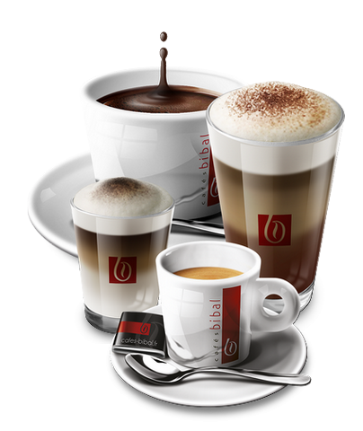

PineApple se développe de jour en jour et a besoin de main-d'oeuvre compétente pour élaborer ses bijoux technologiques. C'est pour cela que nous faisons appel
à vous, jeunes gens talenteux, débordant d'énergie et peu exigeants sur la qualité de votre emploi. Voici nos offres d'emploi actuelles qui vous donnerons envie
de faire partie de l'aventure PineApple avec des tâches à accomplir et des salaires toujours plus excitants !
Contactez-nous pour postuler dès maintenant
Ouvrier asiatique
Participez à la conception des produits PineApple et obtenez un statut social reconnu !
-
Asiatique, sans emplois, ami ni domicile ? Nous vous offrons la chance de votre vie !
Rémunération et avantages : Une rémunération s’élevant jusqu'à plusieurs centimes de l’heure, un lieu de travail et de rencontre (plusieurs milliers de collègues) des repas constitués de vos aliments d’origine vous sont offerts !
Conditions de travail : Aussi, ne vous inquiétez pas de savoir comment vous rendre chaque jours à votre lieu de travail, PineApple a pensé à tout : Des dortoirs vous sont consacrés, et des tapis roulants vous déposent à quelques centimètres de vos bureaux.
Horaires : Nos plages horaires de 15h par jours vous permettent non pas seulement de travailler, mais aussi de pouvoir manger et dormir.
Quelques conditions d'acceptations :
-Parler couremment trois langues asiatiques, l'entente entre le personnel n'est pas à mettre de côté.
-Ne pas mesurer plus d'1m75, les locaux ont été designés pour votre ethnie.
-Avoir les cheveux mats et lisses, les boucles peuvent se méler à notre marchandise, et la lumière pourrait se refléter à vos capilaires.
Stagiaire à plein temps
Débutez votre carrière professionnelle dans une entreprise mondiale, et faites profiter à toute notre équipe de votre savoir faire !
-

Vous détenez un talent hors pair dans la préparation de café ? Ce travail est fait pour vous !
Rémunération et avantages : Soyez payé au SMIC* pour être à la disposition de nos employés. Montrez nous votre bonne humeur, et des cafés vous seront offerts à vous aussi.
Conditions de travail : L'enceinte de nos bureaux n'est composé que de quelques batiments, et chaque batiment ne possède que 13 étages. Pour assurer votre mobilité, vous profiterez de pogo sticks fluo !
Horaires : Vous devrez être joignable à n'importe quels moments dans la journée. La nuit, vous aurez tout votre temps pour reprendre des forces et de cette manière rester efficace pour vos prochains jours.
Quelques conditions d'acceptations :
-Avoir une endurance dépassant 2h à 13km/h, les allés retours sont fréquents, il ne faut pas perdre pied si les employés ont soif.
-Savoir baisser les yeux en permanence, vos superieurs aiment se sentir superieurs.
-Préparer de tendres et délicieux cafés.
*SMIC : Salaire Mensuel Incluant Charges, soit près de 2,3 euros de l'heure.
Technicienne de surface suédoise
C'est parce que l'énergie est notre avenir que nous devons l'économiser. Usez de vos atouts pour augmenter de quelques degrès l'ambiance de l'entreprise !
-
Aucun chef d'entreprise n'apprécie vos qualites physiques à leur juste valeur ? Postulez chez PineApple, et beneficiez d'une haute reconnaissance de la part de nos meilleurs responsables.
Rémunération et avantages : Sachez vous mette en valeur et profitez d'un salaire à la hauteur de vos arguments. Aussi, plusieurs avantages tels que le treizième mois, le quatorzième, sans oublier de nombreuses réductions au sein du rayon lingerie dans nos magasins partenaire à partir de 39 euros d'achat (hors offre promotionelle éventuelle).
Conditions de travail : Parce que les femmes n'ont pas toujours le besoin de conduire, un chauffeur personnel vous conduira de votre domicile à votre lieu de travail pour votre plus grand confort. L'accès à l'ensemble de l'enceinte vous sera autorisé.
Horaires : Lors des saisons les plus froides, il vous sera demandé de vous rendre à votre bureau à 16h pour des tâches pouvant durer jusque 2h du matin.
Quelques conditions d'acceptations :
-Detenir une panoplie d'au moins 8 jupes courtes dans votre garde-robe.
-Une collection de quatre paires de lunettes est attendue.
-Vos formes doivent êtres à la hauteur de votre équipe, nous ne souhaitons pas une quelconque jalousie entre le personnel feminin.